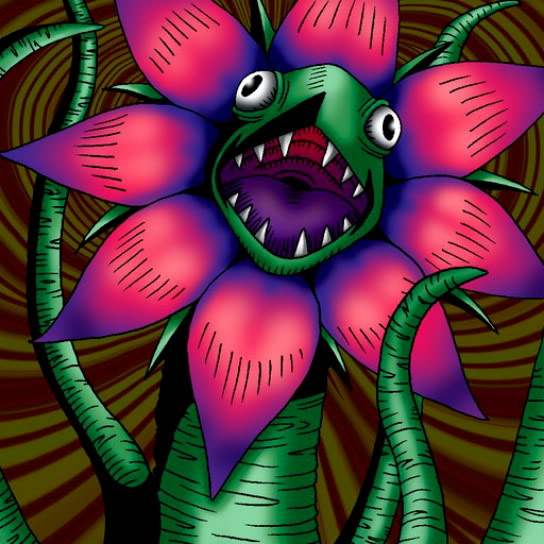

Man Eater

Description: "When this card is flipped face-up, all cards located in FOREST terrain are destroyed."
STATS
ATK: 800
DEF: 600DECK COST
Deck Cost per Card: 19EFFECT NOT IMPLEMENTED
Fusion List (38 Possible Fusions)
- Man Eater + Air Marmot of Nefariousness = Flower Wolf
- Man Eater + Arlownay = Queen of Autumn Leaves
- Man Eater + Armaill = Bean Soldier
- Man Eater + Armed Ninja = Bean Soldier
- Man Eater + Armored Zombie = Pumpking the King of Ghosts
- Man Eater + Bone Mouse = Wood Remains
- Man Eater + Corroding Shark = Pumpking the King of Ghosts
- Man Eater + Dancing Elf = Queen of Autumn Leaves
- Man Eater + Doron = Bean Soldier
- Man Eater + Dragon Zombie = Pumpking the King of Ghosts
- Man Eater + Eyearmor = Bean Soldier
- Man Eater + Fiend's Hand = Wood Remains
- Man Eater + Fire Reaper = Wood Remains
- Man Eater + Flame Ghost = Pumpking the King of Ghosts
- Man Eater + Goddess with the Third Eye = Queen of Autumn Leaves
- Man Eater + Graveyard and the Hand of Invitation = Wood Remains
- Man Eater + Hyo = Bean Soldier
- Man Eater + Key Mace = Queen of Autumn Leaves
- Man Eater + Little Chimera = Flower Wolf
- Man Eater + Lunar Queen Elzaim = Queen of Autumn Leaves
- Man Eater + M-Warrior #1 = Bean Soldier
- Man Eater + M-Warrior #2 = Bean Soldier
- Man Eater + Masked Clown = Bean Soldier
- Man Eater + Mech Mole Zombie = Wood Remains
- Man Eater + Milus Radiant = Flower Wolf
- Man Eater + Mystical Sheep #1 = Flower Wolf
- Man Eater + Petit Dragon = B. Dragon Jungle King
- Man Eater + Queen's Double = Queen of Autumn Leaves
- Man Eater + Shadow Specter = Wood Remains
- Man Eater + Silver Fang = Flower Wolf
- Man Eater + Skull Servant = Wood Remains
- Man Eater + Unknown Warrior of Fiend = Bean Soldier
- Man Eater + Vishwar Randi = Queen of Autumn Leaves
- Man Eater + Waterdragon Fairy = Queen of Autumn Leaves
- Man Eater + Wood Clown = Bean Soldier
- Man Eater + Wood Remains = Pumpking the King of Ghosts
- Man Eater + Yamatano Dragon Scroll = B. Dragon Jungle King
- Man Eater + Zombie Warrior = Pumpking the King of Ghosts